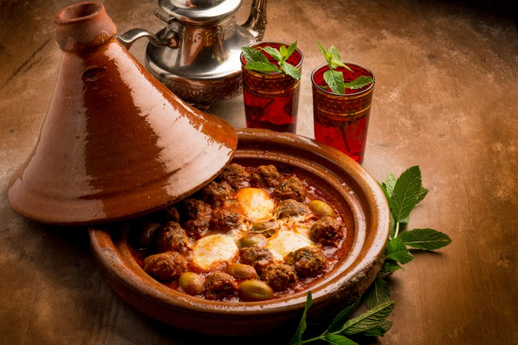

ما هو الطاجين
من المأكولات الشعبيّة المعروفة في المغرب هو الطاجن المغربيّ، وهو من
المأكولات اللذيذة والشهيّة، والذي يتواجد باستمرار على السفرة المغربيّة
ويكثر في العزائم، والطاجن هو عبارة عن قدر مصنوع من الفخار، وما يميّزه أنّه
قادرعلى الحفاظ على القيم الغذائيّة للأصناف المطبوخة فيه، وأيضاً يعطي
الطعام نكهة مميّزة لا تظهر في أيّ نوع من الأطباق المحضّرة بالأقدار
العاديّة، وأكلة الطاجن المغربيّ سهلة التحضير ومقاديرها متوفّرة باستمرار
وخاصّة أنّه يمكن عمل الطاجن بأكثر من طريقة وبمقادير مختلفة
المقادير
- لحم مفروم : 350 غراماً
- البيض : 4 حبات
- الكزبرة : 2 كوب
- بقدونس : 2 ملعقة كبيرة
- الثوم : 4 فصوص (مطحون)
- الزيت : كوب (صغير) الزيت : كوب (صغير)
- فلفل أسود : نصف ملعقة صغيرة
- الفلفل الأحمر : نصف ملعقة صغيرة
- الزنجبيل : نصف ملعقة صغيرة
- طماطم : 2 كوب (مبشورة)
- ملح : ملعقة صغيرة
طريقة التحضير
-
ضعي الطماطم المبشورة، وفصوص الثوم، والكزبرة، والبقدونس، والملح،
والبهارات، والزيت في قدر، واطهي المكونات على نار خفيفة.
-
ضعي اللحم المفروم والثوم المتبقي والبقدونس والملح في وعاء وشكلي كرات
وأضيفيها إلى الطماطم.
-
عندما ينضج اللحم قومي بإضافة البيض الغير مخفوق وغطيه واتركيه على نار
خفيفة حتى ينضج وقدميه ساخناً.